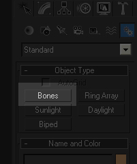
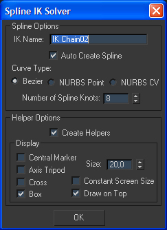
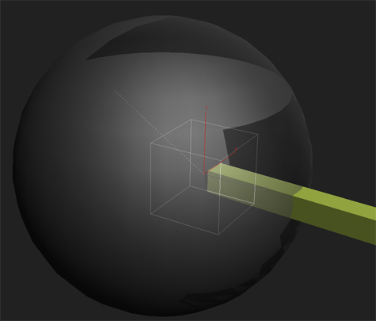
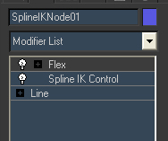
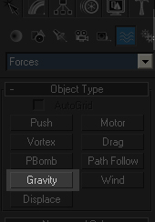
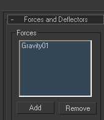
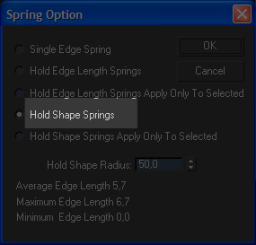
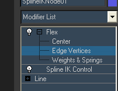

Jiggle Bones (на основе Flex)
Перейти к Создать панель -> Системы -> Кости и создайте костную цепочку. Использование SplineIKSolver в качестве решателя и убедитесь, что Назначить детям / Назначить root выбран.
Создайте свою костную цепь, щелкнув левой кнопкой мыши.

Важно, чтобы костная цепь представляла собой точную и ровную линию, поскольку она определяет стандартная поза. Используйте привязку к сетке.

Когда вы завершите цепочку, щелкнув правой кнопкой мыши, откроется диалоговое окно. Убедитесь, что Автоматическое создание сплайна и Создание помощников активен. Вам также необходимо проверить, установлен ли флажок "Коробка" под дисплеем активен.
После нажатия OK, сплайн будет создан автоматически.

Создайте сферу или что-то еще, что вы хотите использовать в качестве основы для системы. Убедитесь, что ваша первая точка SplineIK находится внутри только что созданного объекта. Затем свяжите только первый блок управления Spline-IK с основанием, которым в данном случае является сфера.

Примените Flex-модификатор к сплайну и отрегулируйте значения.
Хорошие настройки для начала:
- Гибкий: 2
- Сила: 1
- Влияние: 7
- Используйте веса: ON
- Решатель: Рунге-Кутта4
- Образцы: 2

Перейти к Создать панель -> Пространственные деформации -> Силы и создайте Гравитационный узел.

Снова выберите свой сплайн и в Rollout Силы и дефлекторы добавьте в список узел Гравитация. Настройте другие модификаторы.

В разделе Rollout Advanced Springs внизу установите флажок Включить расширенные источники.
На нижнем прессе Длина удержания и настройте его так, как вы хотите. (0 — максимальное растяжение, 100 — отсутствие растяжения)
Нажмите Опции и нажмите Пружины удержания формы. Настройте радиус формы удержания (хорошим значением радиуса может быть средняя длина края, которую вы можете увидеть в нижней строке)

В модификаторе Flex разверните ветку и выберите Edge Vertices. Затем выберите первую вершину сплайна, который находится внутри базового объекта (сферы).
Наконец, вам просто нужно анимировать Базу (Сферу). Запустите анимацию и увидите, как трясутся ваши кости.